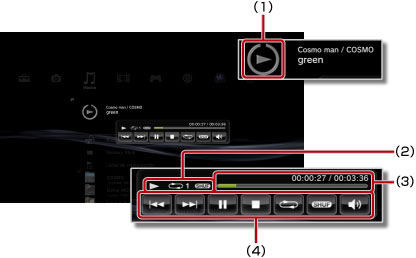

Música > Uso del panel de control de tamaño reducido
Uso del panel de control de tamaño reducido
Permite utilizar el panel de control de tamaño reducido para realizar distintas funciones durante la reproducción de música.
1. |
Durante la reproducción de música, pulse el botón PS. |
||||||||
|---|---|---|---|---|---|---|---|---|---|
2. |
Utilice los botones direccionales para seleccionar el icono para el contenido de música que se está reproduciendo en 
|
Notas
- El icono para el contenido de música en reproducción se muestra directamente bajo el icono
 (Música).
(Música). - Si pulsa el botón
 durante la reproducción de música es posible ocultar el panel de control de tamaño reducido.
durante la reproducción de música es posible ocultar el panel de control de tamaño reducido.
Anterior

Permite ir al principio de la pista actual o anterior.
Siguiente
Permite ir al principio de la pista siguiente.
Pausa
Permite introducir una pausa en la reproducción.
Detener
Permite detener la reproducción y ocultar el panel de control de tamaño reducido.
Aleatorio
Reproduce pistas en orden aleatorio.
Repetición
Reproduce pistas en forma repetida. Es posible seleccionar entre tres modos de repetición (indicados a continuación) si pulsa el botón  .
.
 |
Reproduce una pista de forma repetida. |
|---|---|
|
Reproduce todas las pistas de forma repetida. |
| Sin visualización | Cancela la reproducción repetida y reproduce todas las pistas en orden. |
Control de volumen
Ajusta el nivel de salida de volumen de las pistas que se reproducen en (Música). Es posible seleccionar entre nueve niveles.
Nota
La salida de audio puede distorsionarse si el nivel de volumen es demasiado alto. Si esto ocurre, disminuya el nivel.